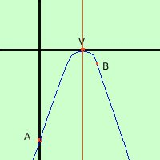

|
Rappresentare graficamente la parabola di equazione y = -x2 + 4x - 4 1) Troviamo le coordinate del vertice abbiamo a = -1 b = 4 c = -4 Calcoliamo la coordinata x del vertice: Vx
Calcoliamo la coordinata y del vertice: Vy
V = (-2; 0) 2) troviamo l'intersezione con l'asse y e' sufficiente prendere come prima coordinata 0 e come seconda coordinata il termine noto della parabola A = (0; -4) A era fra i dati del problema 3) troviamo le intersezioni con l'asse x (nel nostro caso essendo il vertice nel punto V(-2,0) abbiamo che la parabola taglia l'asse nei due punti coincidenti B=C=V=(-2,0) Se non te ne accorgi subito te ne accorgi facendo il sistema Devo fare il sistema fra la parabola e l'equazione dell'asse x (y=0) y = 0 sostituisco y = 0 y = 0 ottengo le soluzioni coincidenti calcoli 
Ora devo mettere i punti in un sistema di assi cartesiani e tracciarne la congiungente ricordando che il vertice e' sempre il punto di massimo o di minimo della curva (vuol dire che sul vertice devo fare la conca, stavolta verso il basso essendo a negativo a=-1) |